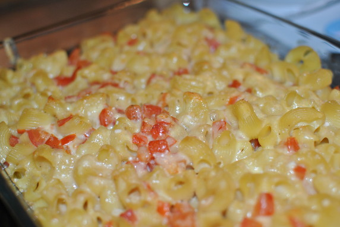

Mac and Cheese

- Zubereitung: ca. 15 Minuten
- Backen: ca. 30 Minuten
- Für 4 Personen
Zutaten
- 20 g Butter
- 2 EL Mehl
- 4 Knoblauchzehen
- 2 Lorbeerblätter
- 500 ml Milch
- 300 g Hörnchen
- 4 Tomaten
- 100 g Gouda
- 50 g Parmesan
- Muskat
- Worcestershiresauce
- Thymian
- Petersilie
Zubereitung
- Die Butter in einem Topf schmelzen und aufschäumen, das Mehl und den in Scheiben geschnittenen Knoblauch dazugeben. Ständig rühren und einige Minuten anschwitzen, bis sich alles zu einer glatten Paste verbunden hat und der Knoblauch goldgelb
ist. Lorbeerblätter dazugeben, Milch angießen und alles glatt rühren, mit Salz und Pfeffer abschmecken und einige Minuten unter Rühren weiter köcheln lassen. Die Lorbeerblätter entnehmen.
- Den Backofen auf 200° Celsius vorheizen. Die Nudeln in reichlich Salzwasser al dente kochen und abgießen. Eine passende Auflaufform fetten.
- Die Tomaten würfeln, kräftig salzen und pfeffern, mit frischem Thymian und Petersilie nach Geschmack vermischen.
- Tomaten, Sauce und drei Viertel des Käses über die Pasta geben, alles gut durchmischen und nach Geschmack mit etwas Muskat und Worcestershiresauce abschmecken. In die Form geben, mit restlichem Käse bestreuen und etwa 30 Minuten überbacken,
bis die Sauce blubbert und der Käse goldgelb ist.